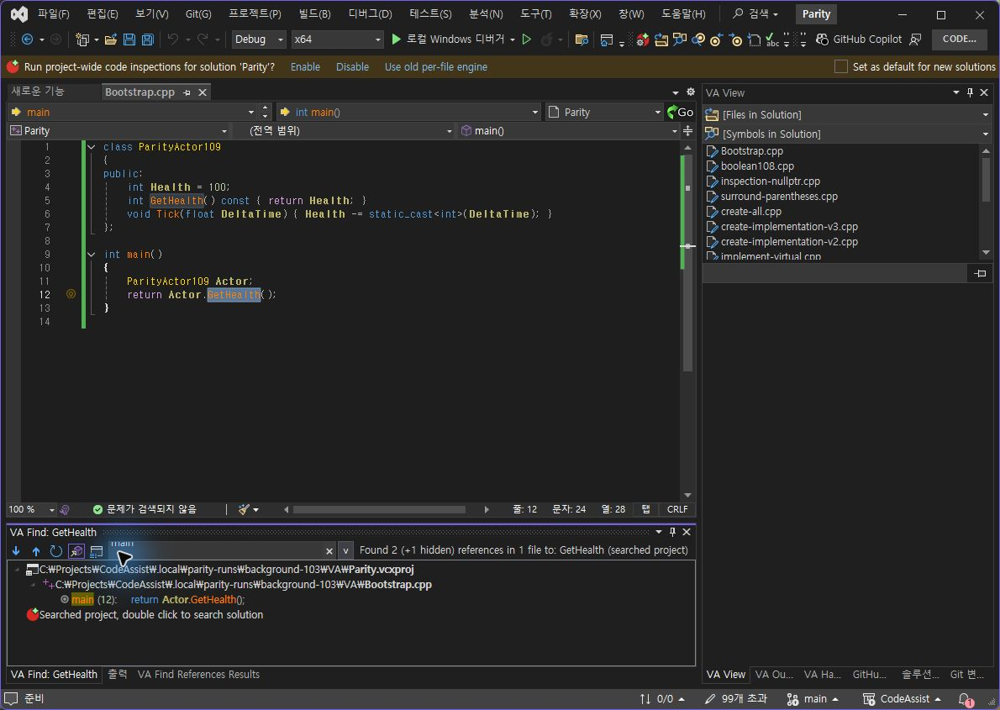
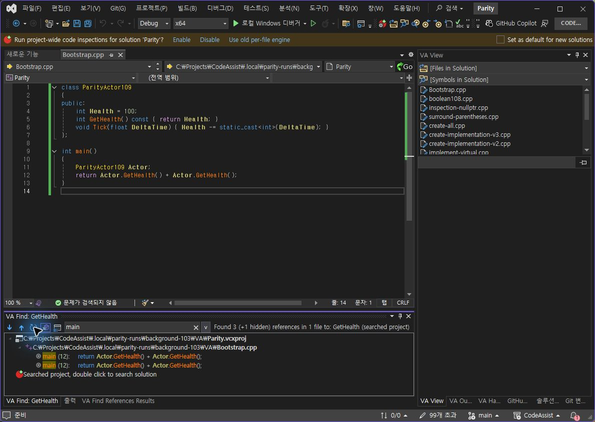

Tracefolio REPORTS & ISSUES
Tracefolio REPORTS & ISSUESCA 0.0.114 — 실제 참조 새로 고침·결과 복제
기존 기록 이전원문에 기록된 작업 내용과 당시 검증 범위를 정리한 보관 기록입니다.
0.0.114 참조 새로 고침·복제
CA 0.0.114 — 실제 참조 새로 고침·결과 복제
수정한 버튼
다음·이전 버튼 옆에 직접 그린 새로 고침 화살표와 겹친 창 복제 아이콘을 추가했습니다. 새로 고침은 원래 검색 문서·위치·심볼을 유지한 실제 재검색입니다. 복제 버튼은 해당 창의 결과 배열·필터·검색 콜백을 별도로 보존합니다. 재검색 실패는 이전 결과를 새 통과로 바꾸지 않고 오류로 표시하도록 구현했습니다. 실패 분기는 이번 실행에서 검증하지 않았습니다.
실제 동일 입력 대조
| 검사 | VA | CA 0.0.114 |
|---|---|---|
| main 필터 상태에서 복제 버튼 클릭 | main·표시 한 행 유지 | main·표시 한 행 유지 |
| 같은 문서에 호출 하나 추가 후 새로 고침 | 전체 2→3, 표시 1→2행 | 전체 2→3, 표시 1→2행 |
VA 복제 — 검색어·결과 유지

CA 복제 — 해당 창 상태 유지

VA 실제 변경 후 새로 고침

CA 실제 변경 후 새로 고침

복제 탭 독립성
CA 복제 탭을 새로 고친 뒤 원본 탭으로 전환했습니다. 복제는 2/3, 원본은 기존 1/2를 유지했습니다. 이 독립성 확인은 CA 단독 추가 검사이며 VA와 비교한 표본 수에는 더하지 않았습니다.

환경 및 복구
VA 10.9.2630.0 / CA 0.0.114 / VS 17.14.37531.7. 동일한 저장 코드임을 두 편집기 본문으로 확인했습니다. 검사 후 양쪽 원본 본문·저장 상태·디스크 SHA256 8A9D8AD69A16FB6813230BE6B2DB5A5717D5DEB55B426B092465777AF2884188을 확인했습니다. 새로 고친 복제 결과는 시험 당시 스냅샷이며 원본 복구 이후의 현재 참조 결과로 해석하지 않습니다.
남은 차이
상속·오버라이드 참조 표시와 전체 프로젝트 표시 버튼은 아직 없습니다.
숨김 참조·종류 필터와 전체 의미 분석 동등성은 미완료입니다.
검색 위치 변경·실패 처리 분기, 다른 복제 진입 경로, 여러 VS 버전의 생명주기 검증이 남았습니다.
이번 복제·새로 고침 표본으로 전체 VA-F002나 전체 제품 통과를 선언하지 않습니다.
VS2019·Modern 빌드 성공, Core 317/317(100%) 통과, 검사 프로필 바이너리 6/6 해시 일치.
계산 데이터 · 시험 코드 · VA 실행 본문 · CA 실행 본문 · 설치 해시 · 테스트 로그
XERJ: 사용 — 참조 명령·결과 창·컴파일러 재검색 경로를 검색하고 현재 소스를 확인했습니다. 전체 목표는 진행 중입니다.
원문과 편집 이력
- 원문 SHA-256:
919209ea995ea4770509f1a9b0d620ad6522036141dff5a49865dd594f752793 - 표시 날짜는 원본 파일의 수정 시각입니다. 작업 완료 시각은 원문에 있는 값을 기준으로 확인합니다.